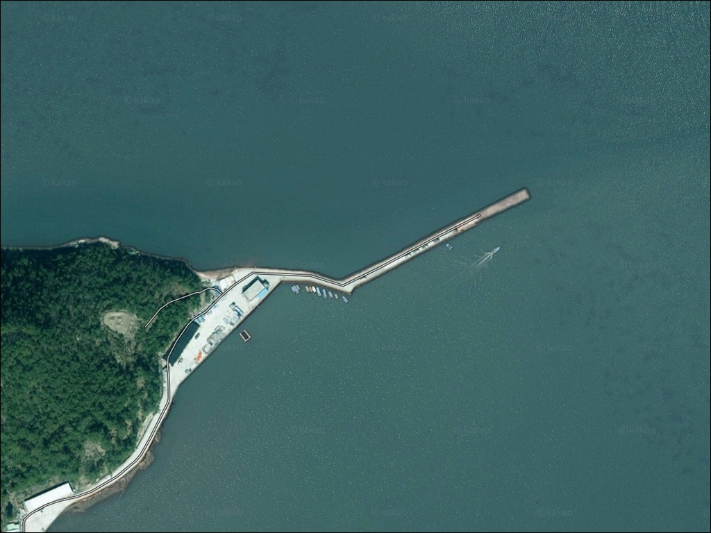
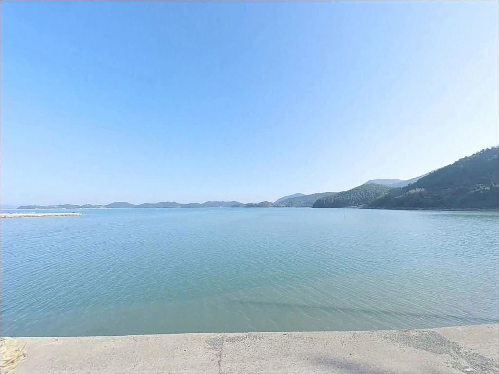
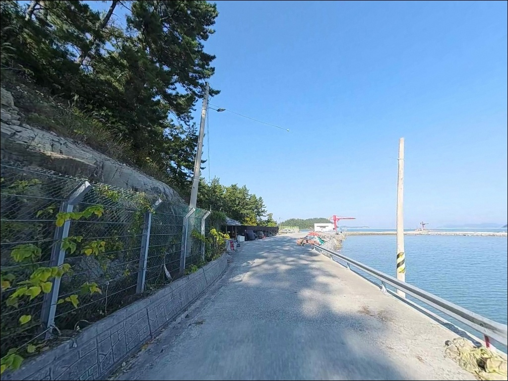
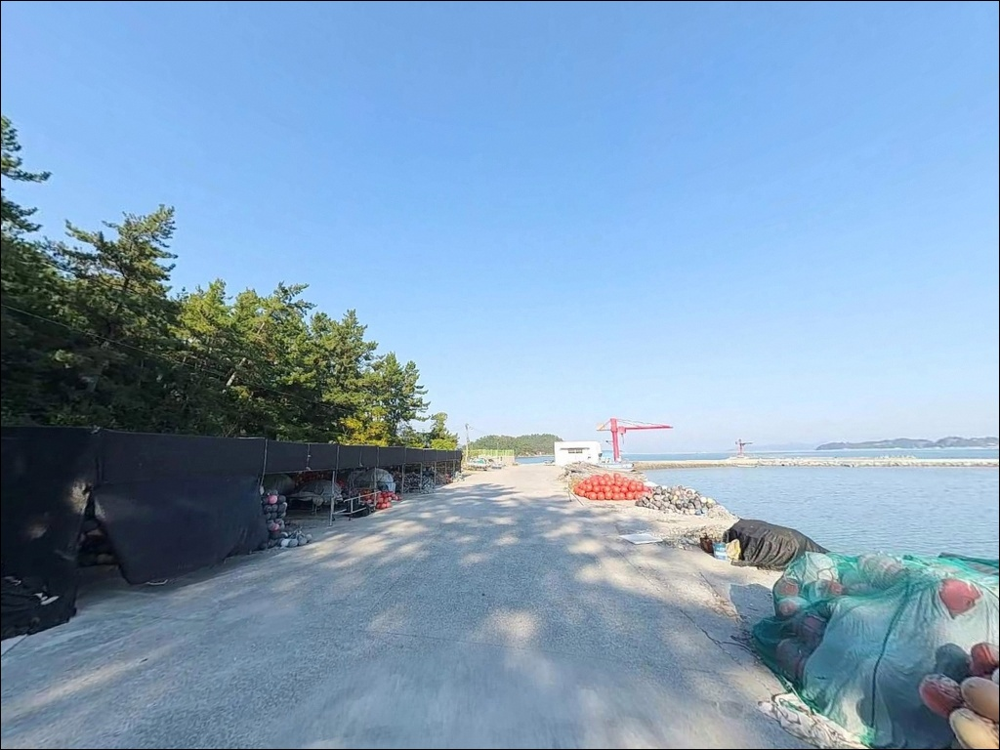
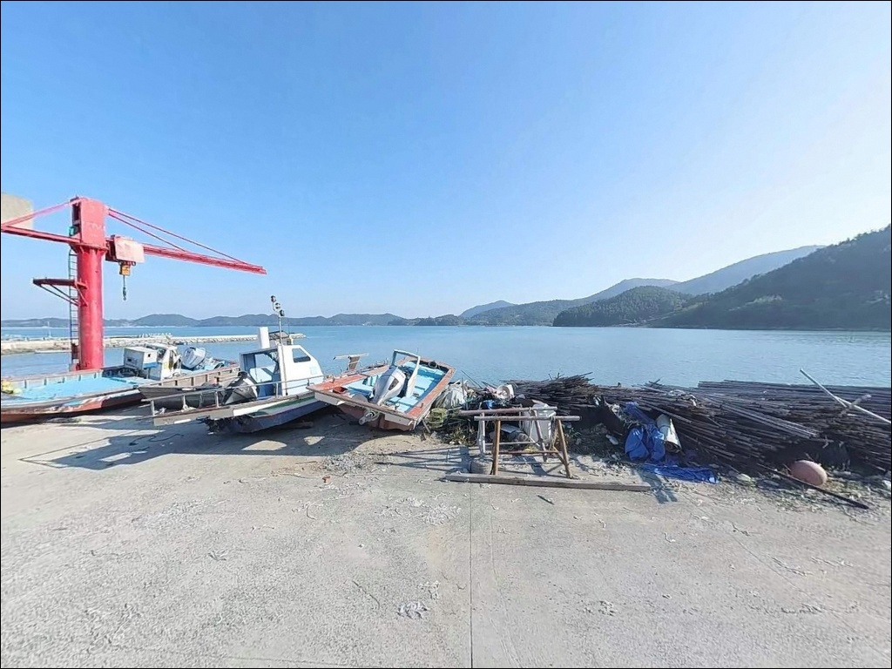
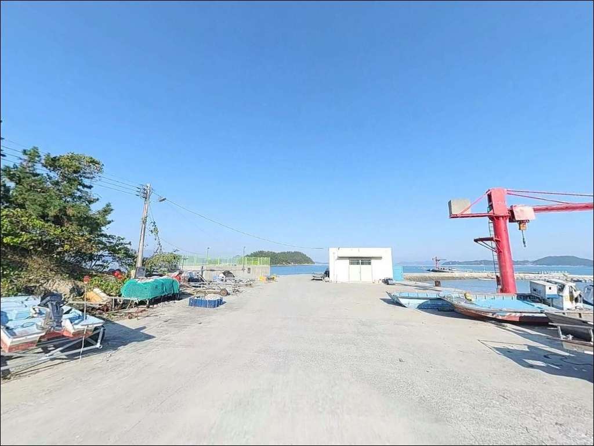
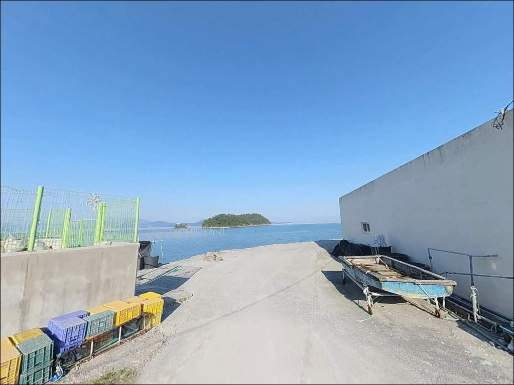
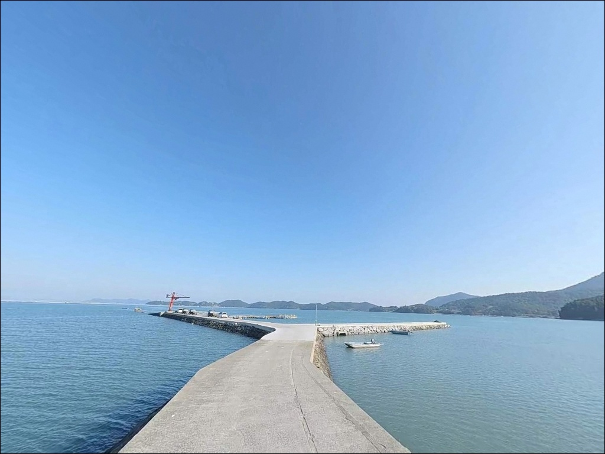
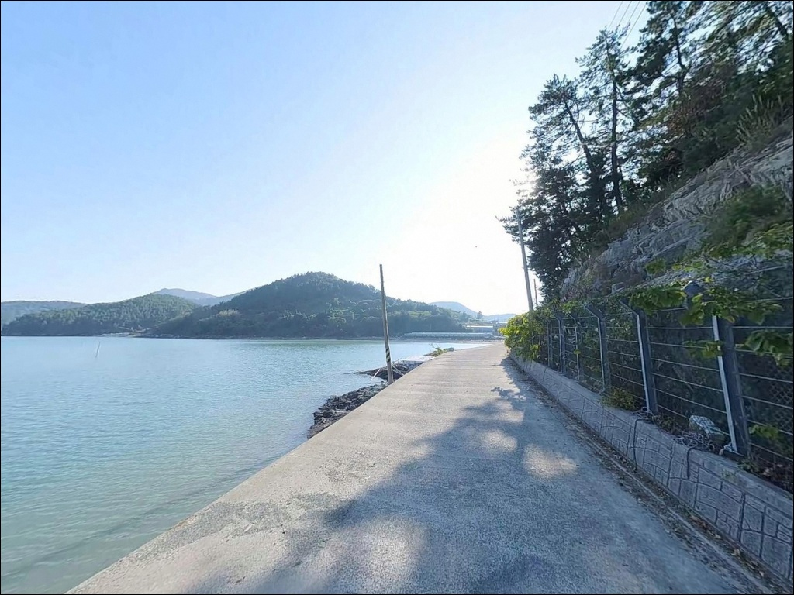

구성방파제, 조약도 전남 완도군 탁 트인 오션뷰 자랑하는 바다 차박 낚시 스팟
이 페이지에는 광고(제휴 링크 포함)가 있으며, 광고 링크를 통해 구매하면 운영자가 판매 수익 또는 수수료를 받을 수 있습니다. 포인트 사진: 카카오맵 스카이뷰·로드뷰. 이 페이지의 지도·사진 이미지는 카카오맵의 실제 서비스 이미지와 다를 수 있습니다.


포인트 안내
구성방파제
전남 완도군 약산면 장용리 449-2
물때 확인 없이 구성방파제를 찾으면
사리 전후 조류가 어떤 채비도 버텨내기 어려운
속도로 흐릅니다.
고금도와 약산도 사이 물길목에 자리한 이 방파제는
조류가 집중되는 구조로,
타이밍을 잘못 잡으면 외항 쪽 낚시 자체가 불가능해지는
포인트입니다.
이 글은 구성방파제의 진입 환경,
물때 기반 낚시 여건, 차박 체류 조건에 집중합니다.
조황 단정이나 특정 어종 보장은
이 글의 범위에 포함되지 않습니다.

1. 포인트 위치 및 진입 동선 분석
구성방파제가 위치한 조약도는
강진 마량에서 고금대교를 건너고,
다시 약산대교를 통해 진입하는 구조입니다.
2007년 개통된 약산대교 덕분에
현재는 도선 없이 육로 접근이 가능하며,
서울·광주 기준 고속도로 이용 후 국도 진입이
표준 경로입니다.
장용리 내부 진입로는 조약도 일주도로(약산로)에서
구성마을 방면 지선도로로 이어지는 구조입니다.
도로 폭은 1~1.5차선 수준의 농어촌 도로이며,
승용차와 소형 SUV는 방파제 입구까지 무리 없이 진입합니다.
대형 캠핑카는 마을 안길 교행에 주의가 필요하며,
출발 전 위성지도로 경로를 확인해 두는 편이 좋습니다.
주차는 방파제 진입로 좌측 공터와
선착장 벽면을 따른 공간을 활용합니다.
5~7대 수용이 가능한 수준이며,
방파제 입구와 선착장 끝단에
차량 회차 공간이 별도로 확보되어 있습니다.

2. 차박 환경과 야간 체류 여건
구성방파제는 소규모 어촌 마을에 인접한 포인트입니다.
야간 차량 통행이 극히 적고
민가 밀집도가 낮은 편이라
전반적으로 조용한 분위기가 유지됩니다.
가로등은 방파제 입구와 중간 지점에 설치되어 있어
완전 암흑 환경은 아닌 수준입니다.
외항은 남동향으로 열려 있는 구조이기 때문에
남풍 계열 강풍이 부는 날에는
파도 영향이 외항 쪽으로 직접 들어옵니다.
차박을 겸할 경우
기상청 풍향 예보를 당일 출발 전에
한 번 더 확인하는 것이 기본 준비입니다.
낚시를 마치고 조용히 하룻밤 머무는 용도로는
나쁘지 않은 환경이나,
어촌 마을 특성상 새벽 출어 시 어선 엔진 소음이
동반될 수 있다는 점은 감안해야 합니다.


3. 주변 편의시설 및 인프라 현황
구성리 마을회관 인근에
공중화장실이 위치하며,
방파제에서 도보 약 3분 거리로
이용이 가능합니다.
마을 내에 소규모 슈퍼가 있으나
운영 시간이 유동적이어서
식수와 기본 간식류는 진입 전에 갖추는 편이 안전합니다.
약산면사무소 인근으로 이동하면
농협 하나로마트, 약국, 식당, 주유소가
한 구역에 모여 있습니다.
구성방파제 기준 차량으로 5분 거리이며,
부족한 소품이나 연료가 있다면
이 동선을 출발 전에 활용하는 편이 효율적입니다.
응급 상황 발생 시 완도 본도까지
차량으로 30분 안팎이 소요됩니다.
고금면 소재 보건지소와 24시 편의점도
반경 10km 이내에서 이용이 가능합니다.

4. 방문 전 반드시 챙겨야 할 준비사항
구성방파제 방문 전 가장 먼저 확인할 것은
물때입니다.
고금도와 약산도 사이 물길목에 자리한 이 포인트는
사리 전후에 조류 흐름이 매우 강하게 집중됩니다.
바다타임에서 약산면 기준 물때를 확인하고
조금 전후 또는 정조 타이밍에 맞춰
입장 시각을 결정하는 것이 기본 전략입니다.
외항이 남동향으로 열린 구조이므로
기상청 풍향 예보를 당일 아침 다시 한번 확인합니다.
외항 테트라포트 구간은 이끼로 인해
미끄러울 수 있으므로
갯바위 신발과 구명조끼는 필수입니다.
조류가 강한 외항 방향 원투낚시 시에는
봉돌 무게를 30호 이상으로 올려
채비 흘림을 최소화해야 합니다.
방파제 끝단에는 추락 방지 난간이 없습니다.
야간 이동 시 개인 헤드랜턴을 반드시 지참하고,
어선 통행 구간에서는 캐스팅 방향을
사전에 확인하는 것이 기본 매너입니다.

5. 고금도~약산도 물길목에서
조류 흐름이 낚시 자리를 결정하는 조건
구성방파제는 약 100m 직선형 구조이며,
외항은 테트라포트가 배치되어 있고
내항은 석축과 콘크리트 벽면으로 이루어져 있습니다.
방파제 끝단 수심은 간조 시에도 5m 이상을 유지하며,
전방 20m 지점부터
수심이 급격히 깊어지는 경사 지형이 형성됩니다.
고금도와 약산도 사이 물길목에 위치한 구조 덕분에
조류 흐름이 방파제 외항 측으로 집중됩니다.
이 흐름은 회유성 어종의 이동 통로 역할을 하며,
찌낚시·에깅·원투낚시가 각기 다른 수심층을
노릴 수 있는 복합 공략 조건을 만들어냅니다.
다만 사리 전후에는 조류가 너무 강해
외항 쪽 낚시 자체가 불가능해지는 수준까지 세집니다.
정조 타이밍을 먼저 계산하고 자리를 잡는 것이
이 포인트를 제대로 공략하는 방법입니다.
내항은 잔잔한 수면이 유지되는 편이며
모래와 뻘이 섞인 바닥 구조로
에깅 채비의 밑걸림이 상대적으로 적습니다.
조약도 일대 해역은 전복·다시마 양식이 밀집한
청정 해역으로, 수중여 발달 구간이 포인트 주변에
폭넓게 분포합니다.
최신 조황은 출조 전에
"약산면 낚시 조황" 또는 "구성방파제 낚시"로
검색해 보시기 바랍니다.


6. 포인트에 어울리는 낚시 스타일
외항 테트라포트 끝단에서의
찌낚시가 이 포인트에서 가장 잘 맞는 스타일입니다.
끝단 전방 10~15m 지점을 조류를 타며 흘리는 방식으로,
이 일대 해역의 대표 대상어인
감성돔 공략에 조건이 잘 맞는 구조입니다.
가을철이 시즌 중심이며,
볼락 계열도 방파제 주변 수중여 구간에서
기대해 볼 수 있습니다.
에깅과 루어낚시는 내외항 전체에서 운용이 가능합니다.
내항 바닥이 모래와 뻘 혼합 구조라
채비 손실이 적어 운영하기 편합니다.
9월~11월 사이 갑오징어와 주꾸미 반응이
활발한 시즌으로, 워킹 에깅으로 방파제 전 구간을
탐색하는 방식이 효율적입니다.
문어류도 조약도 해역에서 기대해볼 수 있는 어종입니다.
원투낚시는 외항 방향으로 장거리 캐스팅하는 방식이
이 포인트 지형에 잘 맞습니다.
수심 급변 구간이 전방 20m 지점부터 형성되어
바닥층 공략 효율이 높습니다.
도다리, 붕장어, 보리멸이 이 방식으로
기대해볼 수 있는 어종이며,
조류가 강한 구간에서는 30호 이상 봉돌을
사용해 채비 흘림을 잡는 것이 기본 대응입니다.

7. 대안 포인트와 플랜 B 동선
구성방파제 조류가 너무 강하거나
주차 여건이 여의치 않을 때는
득암항 방파제가 첫 번째 대안입니다.
구성방파제에서 차량으로 약 10분 거리이며,
원투낚시 여건이 우수하고 주차 공간이
넉넉하게 확보된 대규모 시설입니다.
같은 약산면 해역 패턴이 이어지는 곳이라
낚시 방식을 바꾸지 않고 이동이 가능합니다.
조약도 내 같은 권역의
당목항도 검토해볼 만합니다.
구성방파제에서 섬 일주도로 기준 약 5~6km 거리이며,
국가어항으로 수심 구조와 인프라가 안정적입니다.
낚시용품점도 인근에 분포하고 있어
소품 보충이 필요한 경우에도 활용 가능합니다.
차박 여건이 구성방파제에서 기대에 못 미친다면
가사해수욕장 주차장이 대안이 됩니다.
차량으로 약 8분 거리이며
화장실과 주차 여건이 모두 쾌적한 편입니다.

조류 흐름을 이해하면
구성방파제가 달라 보입니다
찌낚시로 감성돔을 노리거나
에깅으로 갑오징어와 주꾸미를 狙う(조준)하는
낚시인이라면,
구성방파제의 지형 조건은 잘 맞는 구조입니다.
물길목이 만드는 조류 흐름과
끝단 수심 급변 구간이
세 가지 낚시 방식을 동시에 운용할 수 있는
환경을 갖추고 있습니다.
반면 물때 확인 없이 사리 전후에 진입하거나,
남풍 강풍 예보를 무시하고 외항에 자리를 잡으면
낚시 자체가 어려워지는 상황이 생깁니다.
물때 파악, 기상 확인, 진입로 사전 점검,
이 세 가지를 갖추고 간다면
온라인에 정보가 많지 않은 조용한 포인트에서
제대로 된 출조가 될 수 있는 곳입니다.
조용한 어촌 마을 옆 방파제에서
물길목 조류를 끼고 낚시와 차박을 함께 즐기고 싶은
낚시인에게 구성방파제는 직접 발품을 팔아볼 만한
가치가 있는 포인트입니다.